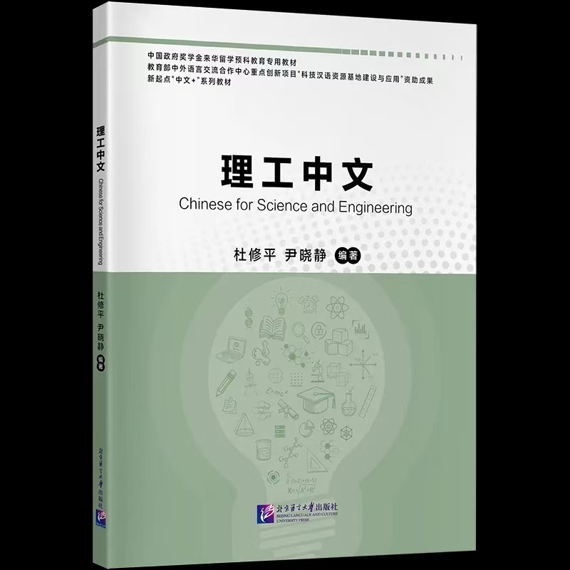

科技新闻一览
【科技日报】我国科学家揭示东北黑土成因2024-03-21 转自：中国科技网 来源：科技日报 发布日期：2024-03-20 作者：陆成宽
记者20日从中国科学院地质与地球物理研究所获悉，该所科研人员在东北黑土区开展了大范围的野外调查和样品采集工作，通过分析采集的黑土样品发现，黑土物质最初都是由风力搬运而来。相关研究成果在线发表于国际学术期刊《Catena》。黑土是世界公认的最肥沃的土壤之一，被誉为“耕地中的大熊猫”，东北黑土区是我国重要的粮食生产基地。然而，在人类活动影响加剧的背景下，东北黑土正受到侵蚀的严重威胁。“厘清东北黑土的成因及其沉积背景，将有助于针对性开展东北黑土地的侵蚀防治工作。”论文通讯作者、中国科学院地质地球所研究员杨石岭说。
The reporter learned from the Institute of Geology and Geophysics of the Chinese Academy of Sciences on the 20th that the researchers of the Institute carried out a large-scale field investigation and sample collection in the black soil area of Northeast China. The research results were published online in the international academic journal Catena. The black soil is recognized as one of the most fertile soils in the world, known as the "giant panda in cultivated land", and the black soil area in Northeast China is an important grain production base in China. However, in the context of the intensification of human activities, the black soil in Northeast China is under serious threat of erosion. "Clarifying the origin and sedimentary background of black soil in Northeast China will help to carry out targeted erosion prevention and control work in black soil in Northeast China." Yang Shiling, the corresponding author of the paper and a researcher at the Institute of Geology and Earth of the Chinese Academy of Sciences, said.
原文链接：http://www.igg.cas.cn/kxcb/mtsm/202403/t20240321_7047519.html
汉语教材速递
《理工中文》
书名：理工中文作者：杜修平，尹晓静（编著） ISBN：978-7-5619-6474-3 出版时间：2024年6月 开本：大16（平） 定价：72.00元
《理工中文》是一本主要面向来华留学本科一年级理工专业留学生或预科教育高级阶段理工专业中文学习者的科技汉语教材，是中国政府教学金来华留学预科教育专用教材。教材共十五章，60篇课文，每章包含话题热身、词语储备、阅读训练、听说训练、能力拓展、词语进阶六个板块。其中阅读训练包括精读、通读、略读文章各一篇，听说训练包含文章一篇。
"Science and Engineering Chinese" is a scientific and technical Chinese textbook mainly for first-year undergraduate science and engineering international students or advanced stage science and engineering Chinese learners in preparatory education, and is a special textbook for Chinese government teaching funds to study in China. The textbook consists of 15 chapters and 60 texts, each of which contains six sections: topic warm-up, word reserve, reading training, listening and speaking training, ability development, and word advancement. Among them, the reading training includes intensive reading, thorough reading, and skimming of an article, and the listening and speaking training includes an article.
购买链接：https://3.cn/243uYW-X
科技国情介绍
关于地质地貌，你还可以了解：
中国境内不仅有常见的构造地貌、河流地貌、海岸地貌，而且有现代冰川和古代冰川作用遗迹、冻土和冰缘作用现象、沙漠和戈壁等；还有在一定气候条件下，反映特殊岩性的石灰岩地貌和黄土地貌。中国地貌种类的多样、典型，是世界其他国家难以相比的。中国大陆西高东低，自西向东形成三大阶梯下降。
There are not only common tectonic landforms, river landforms, and coastal landforms, but also modern glaciers and ancient glacial relics, permafrost and glacial phenomena, deserts, and the Gobi. There are also limestone landforms and loess landforms that reflect special lithologies under certain climatic conditions. The diversity and typicality of China's landforms are difficult to compare with other countries in the world.Chinese mainland is high in the west and low in the east, forming three major steps from west to east.
第一级阶梯是青藏高原，高原面海拔多在4 000～5 000米，其上耸峙多座海拔超出7 000米，甚至8 000米的山峰，享有“世界屋脊”之称。第二级阶梯是青藏高原的北缘与东缘到大兴安岭、太行山、巫山、雪峰山之间，包括了若干高原和盆地，盆地底部高低不一，高原面海拔多在1 000～2 000米。第三级阶梯是更东的低山丘陵和大平原，山丘海拔多在千米以下，平原一般不超过200米。有人认为这一级阶梯也包括沿海大陆架，其水深通常在200米以内。亦有人将沿海大陆架区分出来，称为第四级阶梯。
The first step is the Qinghai-Tibet Plateau, which is mostly 4,000~5,000 meters above sea level, and towers many peaks with an altitude of more than 7,000 meters or even 8,000 meters, enjoying the name of "the roof of the world". The second step is between the northern and eastern edges of the Qinghai-Tibet Plateau and the Daxing'an Mountains, Taihang Mountains, Wushan Mountains and Xuefeng Mountains, including several plateaus and basins, the bottom of the basin is of different heights, and the elevation of the plateau is mostly 1 000~2 000 meters. The third step is the lower hills and the great plains further east, where the elevation of the hills is mostly below a kilometer, and the plains generally do not exceed 200 meters. It has been suggested that this step also includes the coastal continental shelf, which is usually less than 200 metres deep. The coastal continental shelf is also distinguished by those who call it the fourth tier. （摘编自《中国大百科全书·中国地理》）
原文链接：https://igsnrr.cas.cn/cbkx/kpyd/zgdl/cndm/202009/t20200910_5692389.html
网站推荐：中国科学院地理科学与资源研究所
http://igsnrr.cas.cn/cbkx/kpyd/zgdl/cndm/202009/t20200910_5692389.html